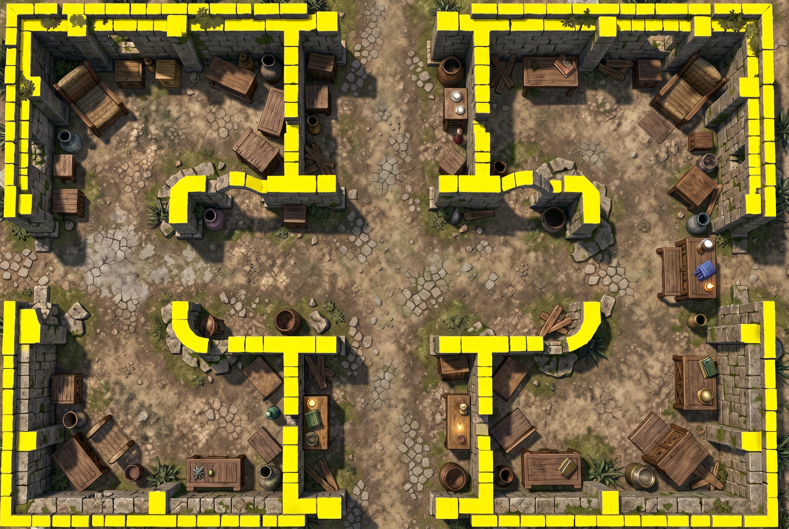
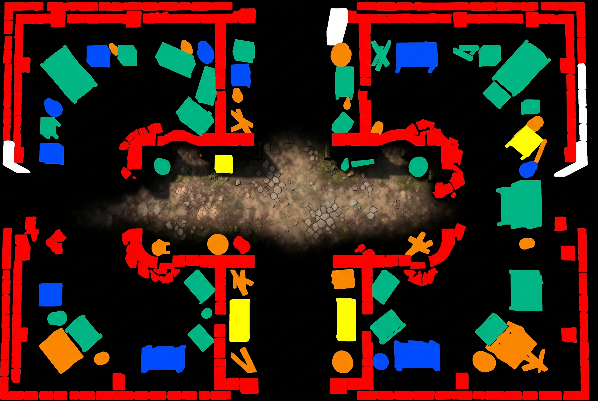

Old stone walls: player walkthrough comparison
The original courtyard art stays on the surface. The existing automatic app workflow generated and saved 20 wall pieces, without manual corrections. This version keeps the map art on the tops and uses a reusable old stone material on the wall sides. Drag to rotate, pinch to zoom.
Players walking the same layout
Raised wall prototype. Druk enters the west room and attempts a blocked move; Varis enters the east room and switches between 45 degrees and overhead.
Open / download raised version
Real app player views and click-and-drag movement, recorded in a disposable campaign using RTX 5090 AV1. Both versions use the same unedited automatic wall result. The raised wall renderer is experimental: full-height walls obscure figures, and visibility can cut rough edges in their surfaces. It is not enabled in normal builds.
Inspect the material and raised map
Loading…
The elevation pass is an estimate, not measured survey data. It can misidentify heights or footprints. Items are now separate raised shapes with vertical sides, rather than bumps in the floor. This still cannot reconstruct table legs or overhangs. Wall footprints and door gaps come from the existing wall-mask converter. This preview does not change a campaign.
Separate API outputs

Fresh automatic structural wall pass
Raw elevation response Converted data: black 0 ft · blue ½ ft · green 1 ft · yellow 2 ft · orange 4 ft · red 8 ft · white 12 ft
Converted data: black 0 ft · blue ½ ft · green 1 ft · yellow 2 ft · orange 4 ft · red 8 ft · white 12 ftThe API left some original art visible. Conversion only accepts pixels close to the data palette; unknown pixels stay at ground level. The wall mask is kept separate and unchanged.
Fresh automatic wall workflow receipt - Stone texture prompt - Earlier height-pass prompts and receipt · Mask-derived wall shapes ? Scenery conversion receipt
Automatic wall result, without manual corrections